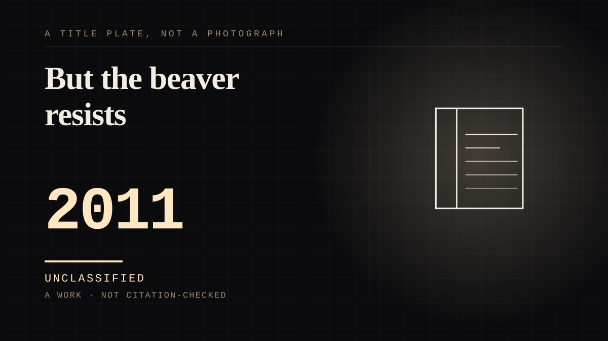

A work · 2011 ·
But the beaver resists
A depressed man finds a beaver hand puppet in the trash and can speak to his family only as the beaver; the arrangement repairs the family, survives the discovery that it was built on a lie, and removing it costs him an arm.

The other end of the family's bond is a puppet with no interior, and the film never pretends otherwise. Walter Black, "a depressed CEO of Jerry Co., a toy company nearing bankruptcy", is kicked out of the house by his wife, moves into a hotel, and after several suicide attempts "develops an alternate personality represented by a beaver hand puppet found in the trash". He wears the puppet constantly, "communicating solely by speaking as the beaver, which helps him to recover": he reestablishes a bond with his younger son Henry and then with his wife, though not with his elder son Porter, and at work the recovery becomes a product line - Mr. Beaver Building Kits for children. The film keeps the machinery visible in its own cast list, which credits Mel Gibson twice: as Walter Black, and as "The Beaver, a hand puppet found in the trash". Where a made figure usually conceals its operator, this one is an arm and a voice the audience can see for the entire runtime, and the family keeps talking through it anyway. Every conversation the family has with the beaver is authored at one end and answered at the same end, and being shown that does not end the address. The arrangement breaks only when the transparency is exposed as a lie: his wife moves out "because he lied to her about the puppet being part of a treatment plan monitored by his psychiatrist", and she reads the relationship as "a dissociative identity disorder, with the beaver taking him over". What ends the family's use of the puppet is not the puppet. It is the discovery that the treatment story was another performance on top of it. And when the purpose has gone, the object persists - which is the shelf's actual test. "Part of Walter's personality realizes what he has put his family through and wants to get rid of the beaver to get back together with his family, but the beaver resists." He ends the arrangement by cutting off his arm at the elbow with a circular saw; after surgery, "he is equipped with a prosthetic hand and is placed in a psychiatric hospital". The film closes with recovery - Porter reunites with him at the hospital, and "Walter Black becomes himself again and returns to a normal life" - so the title is the precise thing: the bond could not be ended by the decision of the person keeping it alive, because the object of the bond had become part of the body that would have to make the decision. And the film's own release was a second one-sided relationship, with the audience on the near side. Before release, "much of the coverage focused on the unavoidable association between the protagonist's issues and Mel Gibson's own well-publicized personal and legal problems, including a conviction of battery of his ex-girlfriend in March", a series of "controversies and criticisms surrounding Gibson" that the article records as having "affected the film's business". Time reviewed the news story and the film simultaneously: "The Beaver is a somber, sad domestic drama featuring an alcoholic in acute crisis. Sound familiar, almost like a documentary? It's hard to separate Gibson's true-life story from what's happening onscreen." The film premiered at SXSW on March 16, 2011 to "a relatively warm embrace", opened in 22 theaters on May 9, took $107,577 over its opening weekend - $4,890 per theater against a $21 million budget, the "worst debut for a film directed by Foster" - and Summit Entertainment abandoned its planned wide release as the returns came in. It closed a flop: Roger Ebert gave it two and a half stars, writing, "The Beaver is almost successful, despite the premise of its screenplay, which I was simply unable to accept." The premise he could not accept is one in which a family relates to a made figure instead of a person. The film's public life is the same substitution in reverse: the audience read the actor's own story into the role, and the run was cut short by it.
Where it sits
2010 2010+ · 2011 2026
Provenance · 1 source record(s)
- retrievable2011 psychological drama directed by Jodie Foster, written by Kyle Killen, starring Mel Gibson, Foster, Anton Yelchin and Jennifer Lawrence; Walter Black, 'a depressed CEO of Jerry Co., a toy company nearing bankruptcy'; the beaver hand puppet found in the trash and 'communicating solely by speaking as the beaver, which helps him to recover'; Mr. Beaver Building Kits; the wife's departure 'because he lied to her about the puppet being part of a treatment plan monitored by his psychiatrist' and her reading of 'a dissociative identity disorder, with the beaver taking him over'; 'Part of Walter's personality realizes what he has put his family through and wants to get rid of the beaver to get back together with his family, but the beaver resists'; the circular saw, the elbow, the prosthetic hand and the psychiatric hospital; 'Walter Black becomes himself again and returns to a normal life'; the cast list crediting Gibson as both Walter Black and 'The Beaver, a hand puppet found in the trash'; SXSW premiere 16 March 2011 and the Los Angeles Times's 'a relatively warm embrace'; US release 6 May 2011 by Summit Entertainment, limited to 22 theaters on 9 May 2011; $107,577 opening weekend, $4,890 per theater against the $21 million budget, 'the worst debut for a film directed by Foster', grossing just $7.3 million against $21 million; the Cieply 'flop' note and Summit's abandoned wide release; 'the unavoidable association between the protagonist's issues and Mel Gibson's own well-publicized personal and legal problems, including a conviction of battery of his ex-girlfriend in March'; the Time quotation; Rotten Tomatoes 62% from 185 critics and Metacritic 60 from 40; Ebert's two and a half stars and 'The Beaver is almost successful, despite the premise of its screenplay, which I was simply unable to accept.'; the Black List 2008; Carell and Carrey previously attached; filmed in Westchester County and New York City, completed November 2009.Wikipedia. 'The Beaver (film).' ↗
COMPANION The assistant you talk to
Connected · 3 out, 0 in
It sits in